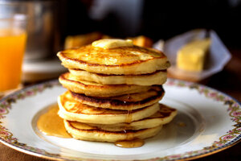

Pancakes Recipe

Description
The basic pancake is made from a simple batter of eggs, flour, milk and baking powder for leavening. You can use different types of flour if you want to experiment with whole wheat or buckwheat. And you can also add fruit to the mixture. The batter can be made from scratch in about the same time it takes to make toast. The most time-consuming part of making pancakes, of course, is cooking them. But that time is so short you should consider these an everyday convenience food, not a special-occasion feast.
Ingredients
- 1 cup all-purpose flour
- 2 tablespoons white sugar
- 2 teaspoons baking powder
- 1 teaspoon salt
- 1 egg, beaten
- 1 cup milk
- 2 tablespoons vegetable oil
Steps
-
In a large bowl, mix flour, sugar, baking powder and salt. Make a well in the center, and pour in milk, egg and oil. Mix until smooth.
-
Heat a lightly oiled griddle or frying pan over medium high heat. Pour or scoop the batter onto the griddle, using approximately 1/4 cup for each pancake. Brown on both sides and serve hot.